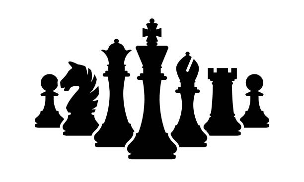

Magnus Carlsen
Hikaru Nakamura
(Current Best Chess Player in the World)
(Top 20 Chess Player & Popular Streamer)
Pro Chess Streamers (Clickable Images):

Chess for Beginners
By Gavin Tran
Why Chess?
Other Enticing Reasons:
Stanford Neuroscientist states chess players can burn up to 6000 calories, 5 ways chess can boost one's resumeSome Chess Tips
Learn Chess From The Best
Magnus Carlsen
Hikaru Nakamura
(Current Best Chess Player in the World)
(Top 20 Chess Player & Popular Streamer)
Pro Chess Streamers (Clickable Images):
Recap:
- The majority of chess players seem to be financially stable
- Playing chess can teach you valuable skills
- Chess has been gaining a good amount of traction these past months
- Getting into chess is easier with a large online community